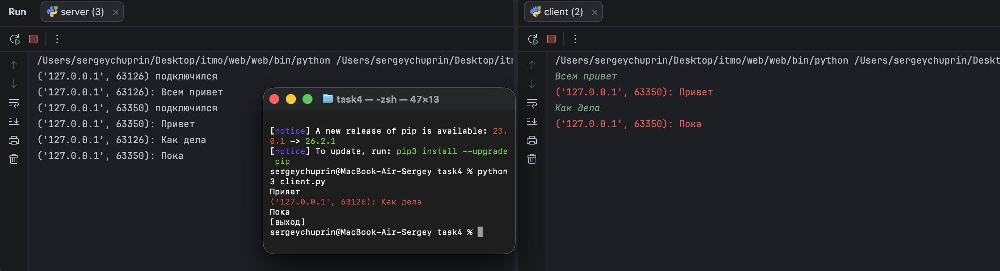

Задание 4 - Многопользовательский чат¶
Задача¶
Реализовать многопользовательский чат на TCP.
Требования:
- обязательно использовать библиотеку
socket; - для многопользовательского чата необходимо использовать библиотеку
threading; - должна быть возможность идентифицировать пользователей;
- пользователь должен иметь возможность выйти из чата.
Теория¶
Чат отличается от предыдущих заданий тем, что сервер обслуживает не одного клиента, а нескольких одновременно. Сервер держит список активных подключений и рассылает входящие сообщения всем, кроме отправителя.
Операции accept() и recv() блокирующие: пока программа ждёт данные от одного
клиента, она не может обслуживать других. Поэтому каждое подключение обрабатывается
в отдельном потоке (threading.Thread).
Сервер:
- в главном цикле принимает подключения и сохраняет сокет клиента в словарь
all_clients, где ключ — адрес клиента(ip, порт); - для каждого клиента запускает поток
chat_worker, который читает сообщения и рассылает их всем остальным участникам с указанием адреса отправителя; - изменение общего словаря при удалении клиента защищено блокировкой
threading.Lock.
Клиент тоже использует два потока:
- фоновый поток
get_answersпостоянно принимает сообщения от сервера и выводит их красным цветом (библиотекаcolorama); - основной поток читает ввод пользователя и отправляет его на сервер.
Команда
[выход]закрывает соединение и завершает клиент.
Идентификация пользователей: каждое сообщение приходит остальным участникам
с префиксом — адресом отправителя (ip, порт), который уникален для каждого подключения.
Код сервера¶
import socket
import threading
server = socket.socket(socket.AF_INET, socket.SOCK_STREAM)
server.bind(('localhost', 40_000))
server.listen()
all_clients = dict()
lock = threading.Lock()
def chat_worker(client, address):
try:
while True:
message = client.recv(1024)
if not message:
break
else:
for addr in all_clients:
if addr != address:
text = f'{address}: {message.decode("utf-8")}'
all_clients[addr].send(text.encode("utf-8"))
print(f'{address}: {message.decode("utf-8")}')
except:
with lock:
all_clients.pop(address)
client.close()
print(f'{address} отключился')
while True:
client, address = server.accept()
print(f'{address} подключился')
all_clients[address] = client
t = threading.Thread(target=chat_worker, args=(client, address))
t.start()
Код клиента¶
import socket
import threading
from colorama import init, Fore, Style
init()
client = socket.socket(socket.AF_INET, socket.SOCK_STREAM)
client.connect(('localhost', 40_000))
def get_answers():
while True:
try:
answer = client.recv(1024)
if not answer:
break
print(Fore.RED + answer.decode('utf-8') + Style.RESET_ALL)
except:
break
t = threading.Thread(target=get_answers)
t.start()
while True:
message = input('')
if message == '[выход]':
client.close()
break
client.send(message.encode('utf-8'))
Запуск¶
Клиенту нужна библиотека colorama:
pip install colorama
Из папки task4 запустить сервер:
python3 server.py
Затем в нескольких терминалах запустить клиентов (один и тот же скрипт):
python3 client.py
Пример¶
